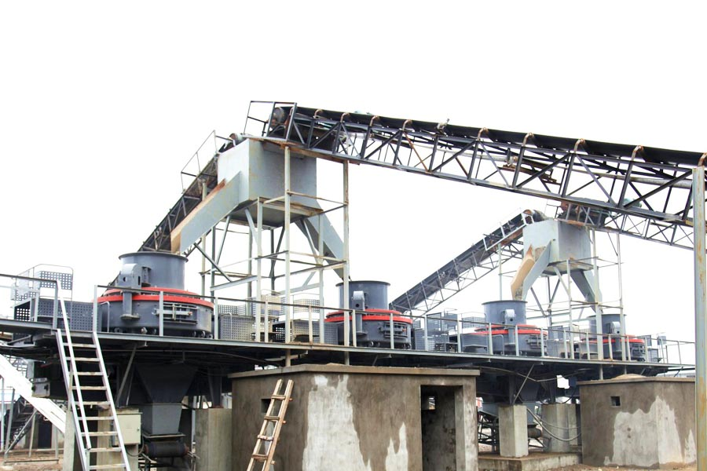

Construction waste crushing production line

Mobile construction waste crushing station for urban construction waste crushing.
silica sand beneficiation plant
300 tons per hour, silica sand beneficiation plant
River gravel sand production line is specifically designed for this gravel river gravel sand, broken only high yield, high degree of automation, and low operating costs, less environmentally friendly energy pollution, usually without failure, maintenance is simple, Mechanism of sand produced good shape, with the management, much better than the artificial sand, by the majority of users are welcome. Faced with a growing number of consumers to invest in river pebbles sand production line, perhaps consumers will ask how to invest it better, and now we speaking next, how to avoid investment?

1, to understand River gravel sand production line equipment package
River gravel sand production line the entire production line running smoothly, the entire production line are vibrating feeder, jaw crusher, crushing machine, sand making machine, sand washing machine, vibrating screen and belt conveyors and other equipment. After the first stone crushing equipment has broken feeder again fed to the crusher crushing process, followed by the shaker will achieve the objectives and requirements of the material transport of sand and gravel to sand washing equipment after the completion of the various types of materials processing.
2, selected manufacturers, conduct inquiry
Very much, consumers want to get on the river gravel sand production line factory good investment results, you're looking for good manufacturers to invest, pay attention to see the manufacturer's brand reputation when selecting manufacturers really, how the quality of service such as how , the manufacturers and the manufacturers should be selected after the price of the composition of basic communication, see what is included in the price, just their prices, some manufacturers price strip box contains the entire production line equipment, and some only contain equipment prices also Writes where its transportation costs, installation, sale and other related costs involved, some factory-installed free of charge, etc., so users should be the pre-investment which production line inquiry and manufacturers. And in the inquiry process, consumers can combine their own needs to the manufacturers mentioned requirements, tailored to the most appropriate river pebbles sand production line.
3, to prepare the relevant procedures, signed a purchase contract
Because River gravel sand production line put into operation and so belongs to mining crushing industry, sometimes the user may relate to the relevant procedures of handling, such as mining and other procedures, does not get the approval of the relevant authorities is illegal, so the user can in the investment front will need to do your own formal procedures were handled. After the relevant procedures to run, if satisfied with equipment manufacturers, and manufacturers can sell signed a purchase contract and other related personnel, to ensure the rational consumer rights.
4, in consultation with the manufacturers service
An attitude and level of service on behalf of the company's corporate image, which you can learn whether an enterprise will win the trust and support, in today's very service-oriented society, people buy products, not only to see the value of the product itself, also particularly valued product-related services are in place, river pebbles sand production line does not mean that the customer buying the service would cease, consumers and manufacturers to after-sales service, maintenance agreement, technical assistance and other issues, in order to avoid future production occurs unexpected trouble.
Leave Me A Message, Now
If you have any questions regarding equipment prices, production line configuration or other problems, you can send a message to us, we will contact you soon.